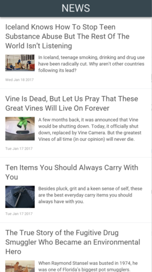

News feed

In this example we'll explore how to create a simple news feed using JavaScript data binding. In this example we will be fetching data from http://www.digg.com popular articles JSON feed.
You can look at the raw data here.
<App Background="#ECEFF1">
<JavaScript>
var Observable = require("FuseJS/Observable");
var data = Observable();
function Article(data) {
this.title = data.content.title;
this.description = data.content.description;
this.author = data.content.author;
this.published = new Date(data.date_published * 1000).toDateString();
this.image = "";
if (data.content.media.images.length > 0) this.image = data.content.media.images[0].original_url;
};
fetch("http://digg.com/api/news/popular.json")
.then(function(response) { return response.json(); })
.then(function(responseObject) {
var items = [];
for (var i in responseObject.data.feed) {
items.push(new Article(responseObject.data.feed[i]));
}
data.replaceAll(items);
});
module.exports = {
dataSource: data
};
</JavaScript>
<Panel ux:Class="NewsItem">
<StackPanel ItemSpacing="10" Margin="15">
<Text Value="{title}" TextWrapping="Wrap" FontSize="20" />
<DockPanel>
<Text Value="{description}" TextWrapping="Wrap" FontSize="13" />
<WhileString Value="{image}" Test="IsNotEmpty">
<Panel Dock="Left">
<Image Url="{image}" Width="80" Margin="0,0,10,0" Alignment="TopLeft" />
</Panel>
</WhileString>
</DockPanel>
<DockPanel>
<Text Value="{published}" FontSize="10" Color="#999" Dock="Left" />
<WhileString Value="{author}" Test="IsNotEmpty">
<Text Value="by {author}" FontSize="10" Color="#999" Dock="Right" />
</WhileString>
</DockPanel>
</StackPanel>
<Rectangle Color="#FFF" />
</Panel>
<ClientPanel>
<Panel Dock="Top" Height="46">
<Text Value="NEWS" Color="#ECEFF1" FontSize="28" Alignment="Center" />
<Rectangle Color="#37474F" />
<Shadow />
</Panel>
<ScrollView>
<StackPanel ItemSpacing="1">
<Each Items="{dataSource}">
<NewsItem />
</Each>
</StackPanel>
</ScrollView>
</ClientPanel>
</App>
When the data is received from the server, our JavaScript code creates an object for each news article and puts them inside of an Observable collection. Our UX code takes care of iterating over the collection using Each and formats the visual of each news item entry with the help of a conventient custom ux:Class we created.